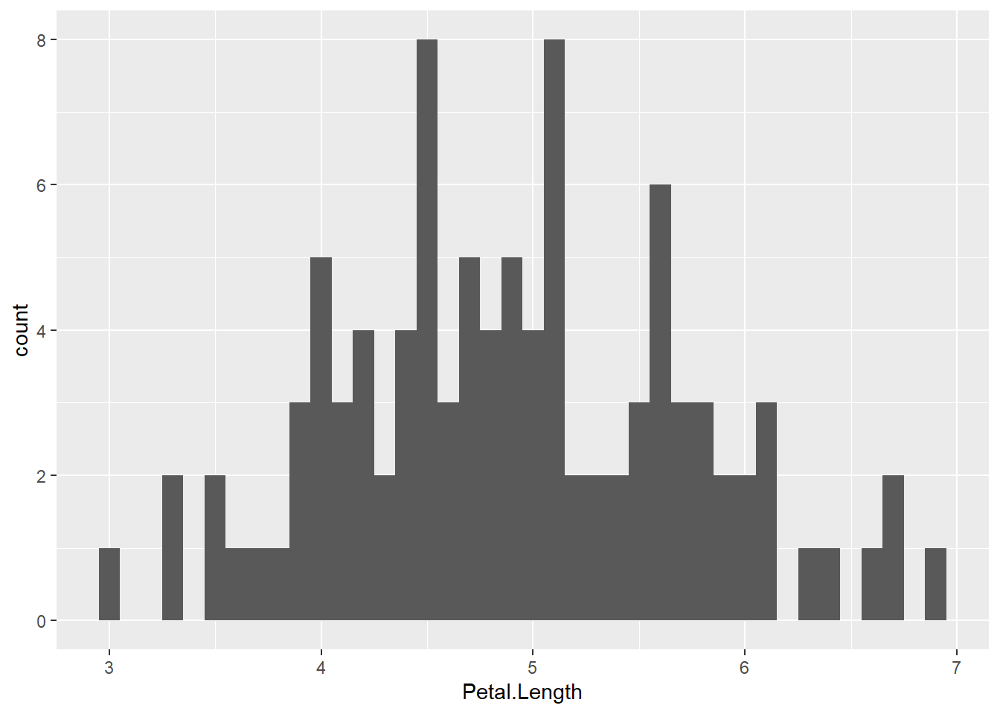
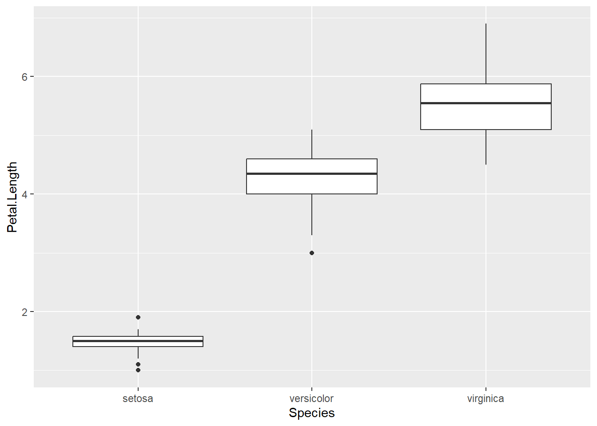

Code
DT::datatable(iris)Мета: Засвоєння принципів, знайомство з інструментами та набуття навичок експлораторного (розвідувального) аналізу даних засобами мови програмування R та колекції пакетів dplyr, ggplot2, desctable, GGally, corrplot, PerformanceAnalytics, FactoMineR, factoextra, desctable, ade4, psych, smacof, WVPlots, caret, car.
У рамках життєвого циклу процесу Data Mining згідно з методологією CRISP DM (wikipedia 2023a), першою фазою аналізу даних є “Розуміння даних” (Understanding) (рис. 1). До цієї фази входять розглянуті у попередніх лабораторних роботах задачі збору та різного роду трасформації. Наступною важливою задачею даної фази є вивчення даних, що складає основу так званого розвідувального аналізу даних (Exploratory data analysis, EDA).
Розвідувальний аналіз даних – аналіз основних властивостей даних, виявлення в них загальних закономірностей, розподілів та аномалій, побудова початкових моделей шляхом їх перетворення та/або представлення у зручному вигляді: графічному, табличному, схем, діаграм і т.ін. (wikipedia 2023b)

Термін EDA був введений математиком Джоном Тьюкі, який сформулював цілі РАД таким чином:
До основних інструментів РАД відносятся:
РАД – це ітеративна процедура, в результаті якої ми:
“РАД є важливою частиною будь-якого аналізу даних, навіть якщо питання надається вам на блюді, тому що вам завжди потрібно вивчити якість ваших даних. Очищення даних – це лише одне застосування РАД: ви задаєте питання про те, чи відповідають ваші дані вашим очікуванням чи ні.” (Hadley Wickham 2023).
Для очищення даних нам потрібно буде розгорнути всі інструменти РАД: візуалізацію, перетворення та моделювання.
Не існує правил, яким ми могли би керуватися, в частині того, які питання нам слід задавати в процесі своїх досліджень. Проте два типи питань завжди будуть корисними для того, щоб робити відкриття у наших даних. У самій довільній формі ці питання можна сформулювати так (Hadley Wickham 2023):
У попередніх темах нами детально були розглянуті шкали вимірювань, математичні операції, які мають сенс з результатми вимірювання у відповідній шкалі та відповідні статистичні характеристики, які мають сенс. Нагадаємо коротко про них:
Шкала найменувань (номінальна шкала), є найпростішою формою шкали, де єдині можливі відносини між елементами – це відносини рівності та нерівності. Ця шкала використовується для класифікації об’єктів на основі спільних характеристик і не передбачає встановлення порядку або відношень “більше-менше” між елементами. Вона застосовується для опису якісних характеристик (експериментальні групи, стать, політичні партії, країни та ідентифікаційні номери, наприклад, номери на майках футболістів).
Порядкова шкала (рангова шкала) – це також шкала більш високого рангу, де можливі відношення “більше - менше”, так я к дозволяє ранжувати результати вимірювань у порядку зростання, чи убування певної якості. Наприклад, шкала “Задовільно”, “Добре” і “Відмінно” відповідає ранговій шкалі. “Відмінно” більше “добре”, “ДОбре” більше “Задовільно”, і відповідно “Відмінно” більше “Задовільно”. Однак ми не можемо стверджувати, що різниця між “Відмінно” і “Добре” дорівнює різниці між “Добре” і “Задовільно”. Тому, навіть якщо ми призначимо числові значення, наприклад, “Відмінно” - 5, “Добре” - 3 і “Задовільно” - 2, ми не можемо здійснити арифметичні операції з цією шкалою, такі як обчислення середнього значення.
Інтервальна шкала (шкала різниць) – дозволяє порівнювати різниці між інтервалами значень. Наприклад, різниця між 10 градусами Цельсія і 20 градусами Цельсія дорівнює різниці між 80 градусами Цельсія і 90 градусами Цельсія. Для цієї шкали можна виконувати операції порівняння середніх значень, але операції множення та ділення не мають сенсу, оскільки нуль на шкалі різниць є відносним. Наприклад, ми не можемо стверджувати, що 20 градусів Цельсія вдвічі тепліше, ніж 10 градусів Цельсія, оскільки нуль градусів Цельсія – це лише умовна точка, яка відповідає температурі плавлення льоду.
Шкала відношень, відома також як абсолютна шкала, визначається як “найповноцінніша” шкала, оскільки вона має природний і однозначний початок координат. Наприклад, маса в кілограмах або температура в градусах Кельвіна, а не Цельсія, є прикладами шкал відношень. На цих шкалах можна виконувати всі арифметичні операції, такі як додавання, віднімання, множення та ділення, оскільки нуль на цих шкалах має абсолютне значення. Тобто, на шкалі відношень можна порівнювати відношення значень і робити обчислення, що є неможливим на інших типах шкал.
найбльш загальні питання розвідувального аналізу даних, зазначені вище щодо типу варіанції і ковариації залишаються актуальними для вимірів у буль-якій шкалі.
Варіація (Variation) – це тенденція до змін значення змінної від вимірювання до вимірювання. Ми можете легко помітити варіації в реальному житті; якщо ми двічі вимірюємо постійну змінну, ми отримаємо два різні результати.
Категоричні змінні також можуть відрізнятися, якщо виміри робити для різних суб’єктів (наприклад, кольори очей різних людей) або у різні моменти часу (наприклад, енергетичні рівні електрона в різні моменти). Кожна змінна має свій власний паттерн у варіації, який може виявити цікаву інформацію. Найкращий спосіб зрозуміти цю закономірність – візуалізувати розподіл значень змінної.
Візьмемо для дослідження відомий датасет iris і на його прикладі проведемо розвідувальний аналіз даних, водночас продемонстувавши можливі варіанти відповідного інструментарію.
Спочатку завжди доцільно продивитися таблицю датасета, вивести основні статистичні характеристики та побудувати розподіли досліджуваних змінних.
DT::datatable(iris)Нижче наведено приклад розподілу категоріальної змінної Species.
library(tidyverse)
library(ggplot2)
iris |>
ggplot() +
geom_bar(mapping = aes(x = Species))
Частоту для кожного значення категоріальної змінної можна обчислита, наприклад, так:
iris |>
count(Species) Species n
1 setosa 50
2 versicolor 50
3 virginica 50Для неперервних змінних доцільно побудувати гістограму.
iris |>
ggplot() +
geom_histogram(mapping = aes(x = Petal.Length), binwidth = 0.5)Інтервальна таблиця частот, що відповідає гістограмі, може бути обчислена так:
iris |>
count(cut_width(Petal.Length, 0.5)) cut_width(Petal.Length, 0.5) n
1 [0.75,1.25] 4
2 (1.25,1.75] 44
3 (1.75,2.25] 2
4 (2.75,3.25] 1
5 (3.25,3.75] 6
6 (3.75,4.25] 16
7 (4.25,4.75] 22
8 (4.75,5.25] 23
9 (5.25,5.75] 16
10 (5.75,6.25] 10
11 (6.25,6.75] 5
12 (6.75,7.25] 1Можна побудувати гістограму для певної долі значень:
smaller <- iris |>
filter(Petal.Length > 2.25)
smaller |>
ggplot(mapping = aes(x = Petal.Length)) +
geom_histogram(binwidth = 0.1)
Часто буває доцільно поудвати серія гістограм для різних груп спостережень:
iris |>
ggplot(mapping = aes(x = Petal.Length, colour = Species)) +
geom_freqpoly(binwidth = 0.1)Після того, як ми виконали візуалізацію, що ми маємо знайти на цих графіках? Яка може бути послідовність запитань на наступному етапі?
*Типові запитання з урахуванням специфіка даної задачі можуть виглядати так:
Як правило у вибіркових даних зустірчаються викиди (outliers) – такі значення свідчать або про похибку вимірювання, або про якість надзвичайні причини, що потребують уважного вивчення.
iris |>
filter(Species == "virginica") |>
ggplot() +
geom_histogram(mapping = aes(x = Petal.Length), binwidth = 0.5)Якщо приймається рішення їх видалити, то це можна зроити наступним чином:
unusual <- iris |>
filter(Petal.Length < 3 | Petal.Length > 6) |>
select(-Species) |>
arrange(Petal.Length)
unusual Sepal.Length Sepal.Width Petal.Length Petal.Width
1 4.6 3.6 1.0 0.2
2 4.3 3.0 1.1 0.1
3 5.8 4.0 1.2 0.2
4 5.0 3.2 1.2 0.2
5 4.7 3.2 1.3 0.2
6 5.4 3.9 1.3 0.4
7 5.5 3.5 1.3 0.2
8 4.4 3.0 1.3 0.2
9 5.0 3.5 1.3 0.3
10 4.5 2.3 1.3 0.3
11 4.4 3.2 1.3 0.2
12 5.1 3.5 1.4 0.2
13 4.9 3.0 1.4 0.2
14 5.0 3.6 1.4 0.2
15 4.6 3.4 1.4 0.3
16 4.4 2.9 1.4 0.2
17 4.8 3.0 1.4 0.1
18 5.1 3.5 1.4 0.3
19 5.2 3.4 1.4 0.2
20 5.5 4.2 1.4 0.2
21 4.9 3.6 1.4 0.1
22 4.8 3.0 1.4 0.3
23 4.6 3.2 1.4 0.2
24 5.0 3.3 1.4 0.2
25 4.6 3.1 1.5 0.2
26 5.0 3.4 1.5 0.2
27 4.9 3.1 1.5 0.1
28 5.4 3.7 1.5 0.2
29 5.7 4.4 1.5 0.4
30 5.1 3.8 1.5 0.3
31 5.1 3.7 1.5 0.4
32 5.2 3.5 1.5 0.2
33 5.4 3.4 1.5 0.4
34 5.2 4.1 1.5 0.1
35 4.9 3.1 1.5 0.2
36 5.1 3.4 1.5 0.2
37 5.3 3.7 1.5 0.2
38 4.8 3.4 1.6 0.2
39 5.0 3.0 1.6 0.2
40 5.0 3.4 1.6 0.4
41 4.7 3.2 1.6 0.2
42 4.8 3.1 1.6 0.2
43 5.0 3.5 1.6 0.6
44 5.1 3.8 1.6 0.2
45 5.4 3.9 1.7 0.4
46 5.7 3.8 1.7 0.3
47 5.4 3.4 1.7 0.2
48 5.1 3.3 1.7 0.5
49 4.8 3.4 1.9 0.2
50 5.1 3.8 1.9 0.4
51 7.2 3.6 6.1 2.5
52 7.4 2.8 6.1 1.9
53 7.7 3.0 6.1 2.3
54 7.3 2.9 6.3 1.8
55 7.9 3.8 6.4 2.0
56 7.6 3.0 6.6 2.1
57 7.7 3.8 6.7 2.2
58 7.7 2.8 6.7 2.0
59 7.7 2.6 6.9 2.3Часто на практиці дані виявляються некомплектними – мають місце пропущенні дані (NA). У таких випадках відомі два виходи з систуації:
Пакет ggplot2 автоматично видаляє некмоплектні дані:
iris Sepal.Length Sepal.Width Petal.Length Petal.Width Species
1 5.1 3.5 1.4 0.2 setosa
2 4.9 3.0 1.4 0.2 setosa
3 4.7 3.2 1.3 0.2 setosa
4 4.6 3.1 1.5 0.2 setosa
5 5.0 3.6 1.4 0.2 setosa
6 5.4 3.9 1.7 0.4 setosa
7 4.6 3.4 1.4 0.3 setosa
8 5.0 3.4 1.5 0.2 setosa
9 4.4 2.9 1.4 0.2 setosa
10 4.9 3.1 1.5 0.1 setosa
11 5.4 3.7 1.5 0.2 setosa
12 4.8 3.4 1.6 0.2 setosa
13 4.8 3.0 1.4 0.1 setosa
14 4.3 3.0 1.1 0.1 setosa
15 5.8 4.0 1.2 0.2 setosa
16 5.7 4.4 1.5 0.4 setosa
17 5.4 3.9 1.3 0.4 setosa
18 5.1 3.5 1.4 0.3 setosa
19 5.7 3.8 1.7 0.3 setosa
20 5.1 3.8 1.5 0.3 setosa
21 5.4 3.4 1.7 0.2 setosa
22 5.1 3.7 1.5 0.4 setosa
23 4.6 3.6 1.0 0.2 setosa
24 5.1 3.3 1.7 0.5 setosa
25 4.8 3.4 1.9 0.2 setosa
26 5.0 3.0 1.6 0.2 setosa
27 5.0 3.4 1.6 0.4 setosa
28 5.2 3.5 1.5 0.2 setosa
29 5.2 3.4 1.4 0.2 setosa
30 4.7 3.2 1.6 0.2 setosa
31 4.8 3.1 1.6 0.2 setosa
32 5.4 3.4 1.5 0.4 setosa
33 5.2 4.1 1.5 0.1 setosa
34 5.5 4.2 1.4 0.2 setosa
35 4.9 3.1 1.5 0.2 setosa
36 5.0 3.2 1.2 0.2 setosa
37 5.5 3.5 1.3 0.2 setosa
38 4.9 3.6 1.4 0.1 setosa
39 4.4 3.0 1.3 0.2 setosa
40 5.1 3.4 1.5 0.2 setosa
41 5.0 3.5 1.3 0.3 setosa
42 4.5 2.3 1.3 0.3 setosa
43 4.4 3.2 1.3 0.2 setosa
44 5.0 3.5 1.6 0.6 setosa
45 5.1 3.8 1.9 0.4 setosa
46 4.8 3.0 1.4 0.3 setosa
47 5.1 3.8 1.6 0.2 setosa
48 4.6 3.2 1.4 0.2 setosa
49 5.3 3.7 1.5 0.2 setosa
50 5.0 3.3 1.4 0.2 setosa
51 7.0 3.2 4.7 1.4 versicolor
52 6.4 3.2 4.5 1.5 versicolor
53 6.9 3.1 4.9 1.5 versicolor
54 5.5 2.3 4.0 1.3 versicolor
55 6.5 2.8 4.6 1.5 versicolor
56 5.7 2.8 4.5 1.3 versicolor
57 6.3 3.3 4.7 1.6 versicolor
58 4.9 2.4 3.3 1.0 versicolor
59 6.6 2.9 4.6 1.3 versicolor
60 5.2 2.7 3.9 1.4 versicolor
61 5.0 2.0 3.5 1.0 versicolor
62 5.9 3.0 4.2 1.5 versicolor
63 6.0 2.2 4.0 1.0 versicolor
64 6.1 2.9 4.7 1.4 versicolor
65 5.6 2.9 3.6 1.3 versicolor
66 6.7 3.1 4.4 1.4 versicolor
67 5.6 3.0 4.5 1.5 versicolor
68 5.8 2.7 4.1 1.0 versicolor
69 6.2 2.2 4.5 1.5 versicolor
70 5.6 2.5 3.9 1.1 versicolor
71 5.9 3.2 4.8 1.8 versicolor
72 6.1 2.8 4.0 1.3 versicolor
73 6.3 2.5 4.9 1.5 versicolor
74 6.1 2.8 4.7 1.2 versicolor
75 6.4 2.9 4.3 1.3 versicolor
76 6.6 3.0 4.4 1.4 versicolor
77 6.8 2.8 4.8 1.4 versicolor
78 6.7 3.0 5.0 1.7 versicolor
79 6.0 2.9 4.5 1.5 versicolor
80 5.7 2.6 3.5 1.0 versicolor
81 5.5 2.4 3.8 1.1 versicolor
82 5.5 2.4 3.7 1.0 versicolor
83 5.8 2.7 3.9 1.2 versicolor
84 6.0 2.7 5.1 1.6 versicolor
85 5.4 3.0 4.5 1.5 versicolor
86 6.0 3.4 4.5 1.6 versicolor
87 6.7 3.1 4.7 1.5 versicolor
88 6.3 2.3 4.4 1.3 versicolor
89 5.6 3.0 4.1 1.3 versicolor
90 5.5 2.5 4.0 1.3 versicolor
91 5.5 2.6 4.4 1.2 versicolor
92 6.1 3.0 4.6 1.4 versicolor
93 5.8 2.6 4.0 1.2 versicolor
94 5.0 2.3 3.3 1.0 versicolor
95 5.6 2.7 4.2 1.3 versicolor
96 5.7 3.0 4.2 1.2 versicolor
97 5.7 2.9 4.2 1.3 versicolor
98 6.2 2.9 4.3 1.3 versicolor
99 5.1 2.5 3.0 1.1 versicolor
100 5.7 2.8 4.1 1.3 versicolor
101 6.3 3.3 6.0 2.5 virginica
102 5.8 2.7 5.1 1.9 virginica
103 7.1 3.0 5.9 2.1 virginica
104 6.3 2.9 5.6 1.8 virginica
105 6.5 3.0 5.8 2.2 virginica
106 7.6 3.0 6.6 2.1 virginica
107 4.9 2.5 4.5 1.7 virginica
108 7.3 2.9 6.3 1.8 virginica
109 6.7 2.5 5.8 1.8 virginica
110 7.2 3.6 6.1 2.5 virginica
111 6.5 3.2 5.1 2.0 virginica
112 6.4 2.7 5.3 1.9 virginica
113 6.8 3.0 5.5 2.1 virginica
114 5.7 2.5 5.0 2.0 virginica
115 5.8 2.8 5.1 2.4 virginica
116 6.4 3.2 5.3 2.3 virginica
117 6.5 3.0 5.5 1.8 virginica
118 7.7 3.8 6.7 2.2 virginica
119 7.7 2.6 6.9 2.3 virginica
120 6.0 2.2 5.0 1.5 virginica
121 6.9 3.2 5.7 2.3 virginica
122 5.6 2.8 4.9 2.0 virginica
123 7.7 2.8 6.7 2.0 virginica
124 6.3 2.7 4.9 1.8 virginica
125 6.7 3.3 5.7 2.1 virginica
126 7.2 3.2 6.0 1.8 virginica
127 6.2 2.8 4.8 1.8 virginica
128 6.1 3.0 4.9 1.8 virginica
129 6.4 2.8 5.6 2.1 virginica
130 7.2 3.0 5.8 1.6 virginica
131 7.4 2.8 6.1 1.9 virginica
132 7.9 3.8 6.4 2.0 virginica
133 6.4 2.8 5.6 2.2 virginica
134 6.3 2.8 5.1 1.5 virginica
135 6.1 2.6 5.6 1.4 virginica
136 7.7 3.0 6.1 2.3 virginica
137 6.3 3.4 5.6 2.4 virginica
138 6.4 3.1 5.5 1.8 virginica
139 6.0 3.0 4.8 1.8 virginica
140 6.9 3.1 5.4 2.1 virginica
141 6.7 3.1 5.6 2.4 virginica
142 6.9 3.1 5.1 2.3 virginica
143 5.8 2.7 5.1 1.9 virginica
144 6.8 3.2 5.9 2.3 virginica
145 6.7 3.3 5.7 2.5 virginica
146 6.7 3.0 5.2 2.3 virginica
147 6.3 2.5 5.0 1.9 virginica
148 6.5 3.0 5.2 2.0 virginica
149 6.2 3.4 5.4 2.3 virginica
150 5.9 3.0 5.1 1.8 virginicairis2 <- iris |>
mutate(y = ifelse(Petal.Length < 3 | Petal.Length > 20, NA, Petal.Length))ggplot(data = iris2, mapping = aes(x = Petal.Length, y = Petal.Width)) +
geom_point()
Якщо варіація описує поведінку в межах змінної, коваріація описує поведінку між змінними.
Коваріація (Covariation) – це схильність значень двох чи більше змінних змінюватися разом. Найкращим способом виявлення коваріації є візуалізація відносин між двома чи більше змінних.
Природнім є рішення щодо вивчення розподілу неперервної змінної, розбивши її на групи у відповідності до значень категоріальної змінної.
Аналіз щільностей розподілів у цьому випадку є не зовсім зручним. Альтернативним варіантом представлення аналогічної інформації є п’ятиквантильний графік (boxplot, box and wiskers plot), відомий як “боксплот”, або “ящик з вусами”. Боксплот акумулює в собі всі найважливіші інтегральні харакетристики стосовно мір центральної тенденції, розсіювання та форми розподілу (рис. 3).

Тоді для нашого випадку застосування боксплотів дасть такий результат:
ggplot(data = iris, mapping = aes(x = Species, y = Petal.Length)) +
geom_boxplot()
Для візуалізації коваріації між категоріальними змінними необхідно візуалізувати частоти: у вигляді таблиці, або певного графічного візуалізатора. Наприклад:
ggplot(data = diamonds) +
geom_count(mapping = aes(x = cut, y = color))З результатів видно, що існує певна залежність між кольором діаманта, та якістю його ограненості.
Зниження розмірності (Dimensionality reduction) – процесс скорочення кількості випадкових змінних шляхом отримання гооловних змінних. Цей процес можно поділити обирання ознак та виділяння ознак.
Обирання ознак – це процес пошуку первісних змінних (факторів), що починаються в рамках фази розуміння даних із залученням експертів предметної галузі і з залученням всього арсеналу інстурментів маніпулювання даними, про що йшлося вище. (Маніпулятивні методики).
Проектування ознак – це перетворення даних з багатовимірного простору у простір простір невеликої кількості вимірів. (Математичні методики). (Далі під зниженням розмірнонсті будем мати на увазі саме проектування ознак). Існує велика кількість лінійних і нелінійних методик зниження розмірності.
Що дає зниження розмірності на практиці? В першу чергу спрощення представлення багатовимірних даних, їх візуалізацію, вирішення задач класифікації та регресії і, власне, краще розуміння процесів, що моделюються.
Одним з фундаментальних лінійних методів зниження розмірності, що широко викорстовується на практиці, є PCA (wikipedia 2023c).
Припустимо (wikipedia 2023c), що ми маємо випадковий вектор \(X\): \[ X=\begin{pmatrix} x_1 \\ x_2 \\ \vdots \\ x_n \end{pmatrix} \]
З коваріаційною матрицею:
\[
var(X) = \Sigma =
\begin{pmatrix}
\sigma_{1}^2 & \sigma_{12} & \ldots & \sigma_{1p}\\
\sigma_{21} & \sigma_{2}^2 & \ldots & \sigma_{2p}\\
\vdots & \vdots & \ddots & \vdots\\
\sigma_{p1} & \sigma_{p2} & \ldots & \sigma_{p}^2
\end{pmatrix}
\]
Мета PCA (Science 2020) полягає в пошуку \(k\) лінійних комбінацій \(p\) змінних \(X\), що містять найбільшу дисперсію. Лінійна комбінація має насупний вигляд:
\(Y_1 = a_{11} X_1 + a_{12} X_2 + \cdots + a_{1p} X_p\)
\(Y_2 = a_{21} X_1 + a_{22} X_2 + \cdots + a_{2p} X_p\)
\(\vdots\)
\(Y_k = a_{k1} X_1 + a_{k2} X_2 + \cdots + a_{kp} X_p\)
При цьому \(\sum\limits_{i=1}^pa_{1i}^2=1\) і т. д.
Дисперсия першої главної компоненти \(var(Y_1)=a_1'\Sigma a_1\), де \(\Sigma\) – ковариаційна матриця.
Аналогічно обчислюється дисперсія другої і т. д. головних компонент.
У даній моделі вектори \(a_i'=(a_{i1}, a_{i2},...,a_{ip})',\;i=\overline{1,p}\) представляють власні вектори ковариаційної матриці \(\Sigma\), тоді як дисперсія \(i\)-ої головної компоненти дорівнює власному значенню матриці ковариацій:
\(var(Y_i)=\lambda_i\).
Загальна дисперсія вибірки дорівнює \(\sum\limits_{i=1}^p\lambda_{i}.\)
Метод головних компонент (PCA) вирішуючи задачу зниження розмірності дозволяє одночасно вирішити задачу сегементації (кластеризації) – тобто з’ясувати, чи є досліджувані дані однорідними, чи сегментовані на групи зі схожими ознаками. Відповідь на це питання є однією з головних задач експлораторного аналізу, що передує етапу побуви більш складних моделей класифікації, регресії чи моделей на основі асоціативних правил.
В арсеналі R існує багато інструментів для реалізації зниження розмірності, зокрема PCA.
Дано стандартний багатовимірний набір даних Іриси Фішера (англ. Iris flower data set).
Іриси Фішера складаються з даних про 150 вимірювань ірисів з трьох видів —- Iris setosa, Iris virginica і Iris versicolor, по 50 вимірювань на вид. Для кожного екземпляра вимірювалися чотири характеристики (в сантиметрах):
Для даного набору виконати розвідувальний аналіз даних.
Необхідно дати відповідь на такі питання:
4? якщо існує – побудувати таку модель.Дані з досліджуваного набору мають наступний вигляд:
iris |>
head() Sepal.Length Sepal.Width Petal.Length Petal.Width Species
1 5.1 3.5 1.4 0.2 setosa
2 4.9 3.0 1.4 0.2 setosa
3 4.7 3.2 1.3 0.2 setosa
4 4.6 3.1 1.5 0.2 setosa
5 5.0 3.6 1.4 0.2 setosa
6 5.4 3.9 1.7 0.4 setosa# iris |>
# desctable()Обчислимо і дослідимо сумарні статистики.
# Сводные выборочные характеристики
iris |>
summary() Sepal.Length Sepal.Width Petal.Length Petal.Width
Min. :4.300 Min. :2.000 Min. :1.000 Min. :0.100
1st Qu.:5.100 1st Qu.:2.800 1st Qu.:1.600 1st Qu.:0.300
Median :5.800 Median :3.000 Median :4.350 Median :1.300
Mean :5.843 Mean :3.057 Mean :3.758 Mean :1.199
3rd Qu.:6.400 3rd Qu.:3.300 3rd Qu.:5.100 3rd Qu.:1.800
Max. :7.900 Max. :4.400 Max. :6.900 Max. :2.500
Species
setosa :50
versicolor:50
virginica :50
Що ми бачимо?
Дослідимо закони розподілу кожної з чотирьох змінних. Для цього побудуємо серію гістограм для кожної з чотирьох числових змінних: "Sepal.Length", "Sepal.Width", "Petal.Length", "Petal.Width"
# Побудова 4x4 матриці гістограм і щільності нормального розподілу з відносними частками
library(tidyverse)
iris |>
pivot_longer(cols = -Species) |>
ggplot(aes(x = value)) +
geom_histogram(binwidth = 0.2,
fill = "lightblue",
color = "dark grey",
aes(y = after_stat(density))) +
geom_density(aes(y = after_stat(density)), color = "red") +
facet_wrap(~name, scales = "free") +
theme_minimal() +
labs(x = "Значення", y = "Відносна частота")Що ми бачимо?
"Sepal.Length", "Sepal.Width" мають дзвоноподібну форму, наближену до нормального. Враховуючи, що значення оцінок асимметрії та ексцесу несуттєво відрізняються від нуля, в першому наближенні можна вважати дані розподіли нормальними. Про що це говорить і що це дає? По-перше, це говорить про те, що доля малих і великих даних врівноважують одна одну, по-друге, нормальність законів розподілу досліджуваних величин, або, принаймні, “натяк” на нормальність завжди добре, тому що класичними передумовами для коректної побудови великої кількості різного роду моделей вимагає від даних нормального закону розподілу, чи, принаймні, симетричності закону розподілу. В нашому випадку це є передумовою однорідного розподілу спостережень у просторі інформативних ознак, що є позитивним моментом при вирішенні задачі сегментації."Petal.Length", "Petal.Width" на відміну від двох інших, мають чітку бімодальну структуру, що гооврить про явно виражену неоднорідність даних і про те, що саме ці дві змінні є дискримінуючими у просторі досліджуваних ознак; це важливо для побудови задачі сегментаціїДля відповіді на питання, чи пов’язані між собою змінні, застосуємо кореляційний аналіз. З урахуванням числової природи даних, для оцінки кореляції скористаємося коефіцієнтом кореляції Пірсона. Враховуючі багатомірний аналіз початкових даних, важливо вдало підібрати візуалізатор. Нижче запропоновано два з найбільш відомих і поширених.
# Кореляція Пірсона
iris |>
select(-Species) |>
cor() |>
corrplot(order = "hclust", tl.col='black', tl.cex=.75) 
# chart.Correlation(histogram=TRUE, pch=19)# pairs(iris[1:4], main="Edgar Anderson's Iris Data", font.main=4, pch=19)
iris |>
select(-Species) |>
pairs( main="Edgar Anderson's Iris Data", font.main = 4, pch = 19, col = iris$Species)
# pairs(iris[1:4], main="Edgar Anderson's Iris Data", font.main = 4, pch = 19, col = iris$Species)df_iris <- iris |>
select(-Species)
# df_iris |>
# correlation_table("")
df_iris |>
cor() |>
# head(11)
knitr::kable(caption = "Таблица оценок коэффициентов корреляции") | Sepal.Length | Sepal.Width | Petal.Length | Petal.Width | |
|---|---|---|---|---|
| Sepal.Length | 1.0000000 | -0.1175698 | 0.8717538 | 0.8179411 |
| Sepal.Width | -0.1175698 | 1.0000000 | -0.4284401 | -0.3661259 |
| Petal.Length | 0.8717538 | -0.4284401 | 1.0000000 | 0.9628654 |
| Petal.Width | 0.8179411 | -0.3661259 | 0.9628654 | 1.0000000 |
Що ми бачимо?
Sepal.Length та змінними Petal.Length, Petal.Width; на кореляційних полях чітко видно наявність даної кореляціїSpeciesPetal.Length і Sepal.Width; дана кореляція є уявною в силу сегментованості даних по змінній Species: якщо уважно дослідити форму кореляційних полів для кожного значення данної змінної, то можна побачити, що всередині кожного сегменту має місце позитивна кореляціяЩо це нам дає?
Для зниження розмірності і одночасно сегментації даних скористаємося методом головних компонент (PCA).
# PCA
resPCA <- iris |>
select(-Species) |>
PCA(ncp = 8, graph = FALSE)# власні значення та кумулятивний процент
eigenvalues <- as.data.frame(resPCA$eig)
cumVar <- round(eigenvalues$`cumulative percentage of variance`[length(eigenvalues$eigenvalue[eigenvalues$eigenvalue >= 0.9])], 2)knitr::kable(
eigenvalues,
caption = "Власні значення (eigenvalues) і сумарний процент поясненої дисперсії"
)| eigenvalue | percentage of variance | cumulative percentage of variance | |
|---|---|---|---|
| comp 1 | 2.9184978 | 72.9624454 | 72.96245 |
| comp 2 | 0.9140305 | 22.8507618 | 95.81321 |
| comp 3 | 0.1467569 | 3.6689219 | 99.48213 |
| comp 4 | 0.0207148 | 0.5178709 | 100.00000 |
#
fviz_screeplot(resPCA, addlabels = TRUE, ncp=10)Warning in geom_bar(stat = "identity", fill = barfill, color = barcolor, :
Ignoring empty aesthetic: `width`.Чщо ми бачимо?
Ми маємо \(p=\) 2 головних компонент, які пояснюють 95.81 % дисперсії. Це значить, що м маємо всього дві нові компоненти замість чотирьох і практично без втрати інформації можемо представити всі спостереження в системі двох координат на площині: перша компонента по осі Х, друга – по осі Y (див. рис.).
Проаналізуємо детально структуру двох перших компонент, виключивши решту незначимих (див. табл. і рис.).
# Навантаження для двох перших головних компонент
knitr::kable(
resPCA$var$coord[ ,1:2],
caption = "Таблиця навантажень"
)| Dim.1 | Dim.2 | |
|---|---|---|
| Sepal.Length | 0.8901688 | 0.3608299 |
| Sepal.Width | -0.4601427 | 0.8827163 |
| Petal.Length | 0.9915552 | 0.0234152 |
| Petal.Width | 0.9649790 | 0.0639998 |
Що ми бачимо?
Sepal.Length, Petal.Length, Petal.Width; як і прогнозувалося раніше, саме за цією компонентою відбувається дискримінація (розрізнення) трьох різних сегментів трьох типів ірисівSepal.Width – всі три види ірисів можуть мати досить велику варіацію за цим параметром.# Biplot of individuals and variables
fviz_pca_biplot(resPCA,
geom = c("point"),
# label = "none", # hide individual labels
habillage = as.factor(iris$Species), # color by groups
axes = c(1, 2),
repel = TRUE,
label = c("ind", "ind.sup", "quali", "var", "quanti.sup"),
select.var = list(name = c("Sepal.Length", "Sepal.Width", "Petal.Length", "Petal.Width")),
# select.var = list(contrib = 8),
# label = c("ind.sup"),
palette = c("#00AFBB", "#E7B800", "#FC4E07", "#00AFBB", "#E7B800", "#FC4E07"),
# alpha.var = c("contrib"),
# col.ind = c("contrib"),
# col.ind.sup = c("contrib"),
addEllipses = TRUE # Concentration ellipses
) +
theme_minimal()Warning: Using `size` aesthetic for lines was deprecated in ggplot2 3.4.0.
ℹ Please use `linewidth` instead.
ℹ The deprecated feature was likely used in the ggpubr package.
Please report the issue at <https://github.com/kassambara/ggpubr/issues>.Таким чином, з’ясовано, шо початкові дані не є однорідними. Три типи ірисів різняться за довжинами внутрішніх часток оцвітини (petal length) та шириною внутрішньої частки оцвітини (petal width). Завдяки наявності кореляцій у початкових змінних, спостереження вдалося добре описати у просторі двох інтегральних показників. Знайдені кластери характерні для трьох типів ірисів і у майбутньому можуть бути використані для написання класифікатора з метою розпізнавання нових об’єктів.
Видає викладач.